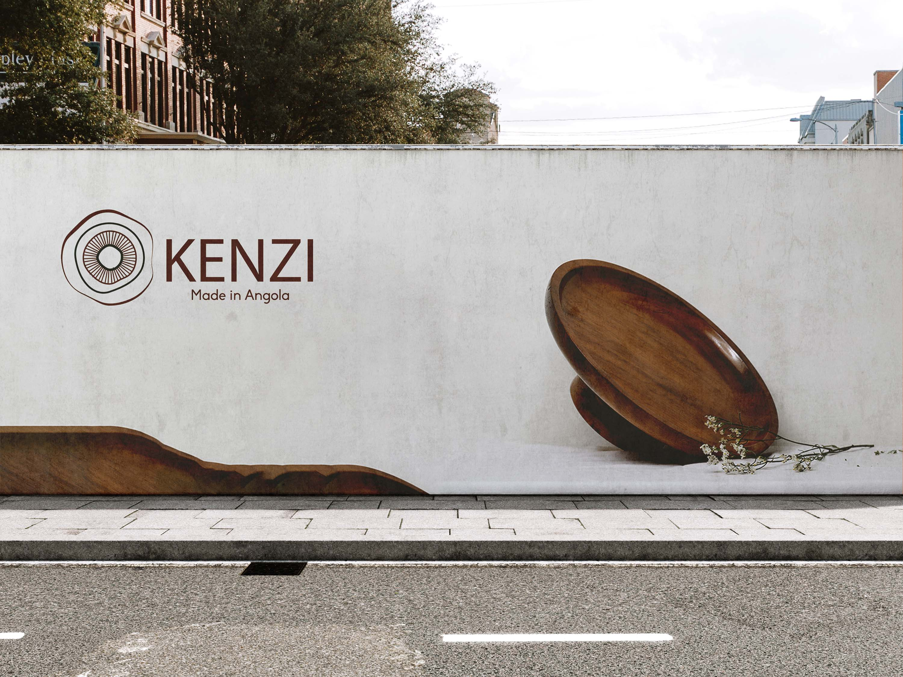
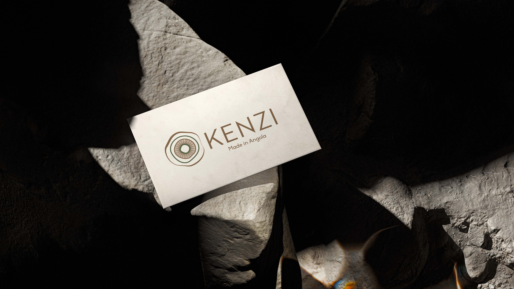
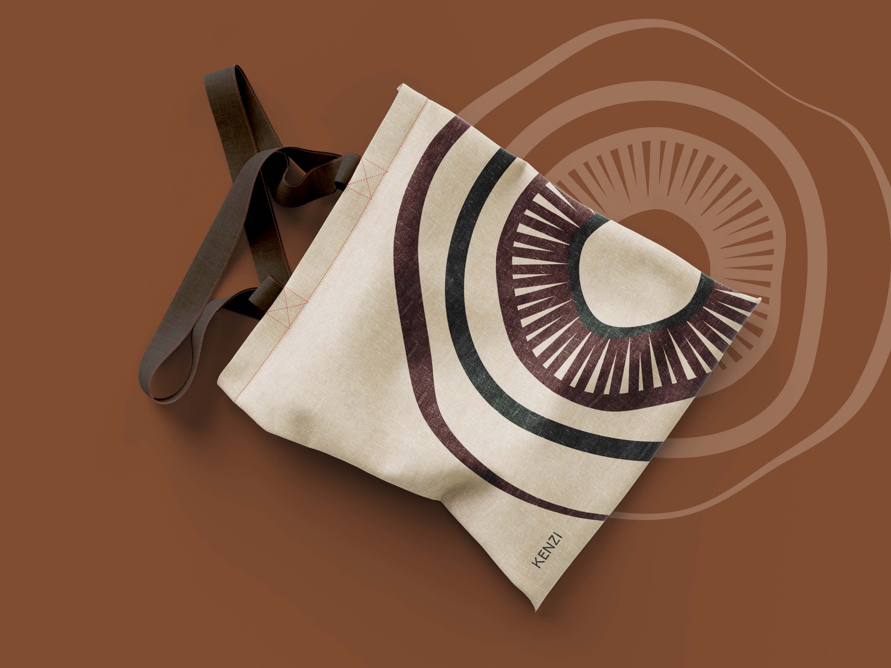
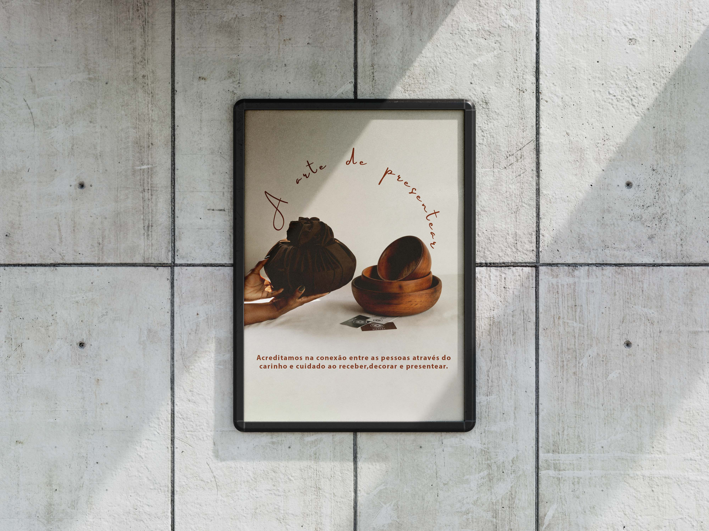

Tipo de trabalho: Identidade Visual / Branding
Criação de uma identidade visual sólida e natural para uma marca de produtos em madeira. O projeto foca-se em transmitir durabilidade, autenticidade e conexão com a matéria-prima através de formas orgânicas e tons terrosos.
   